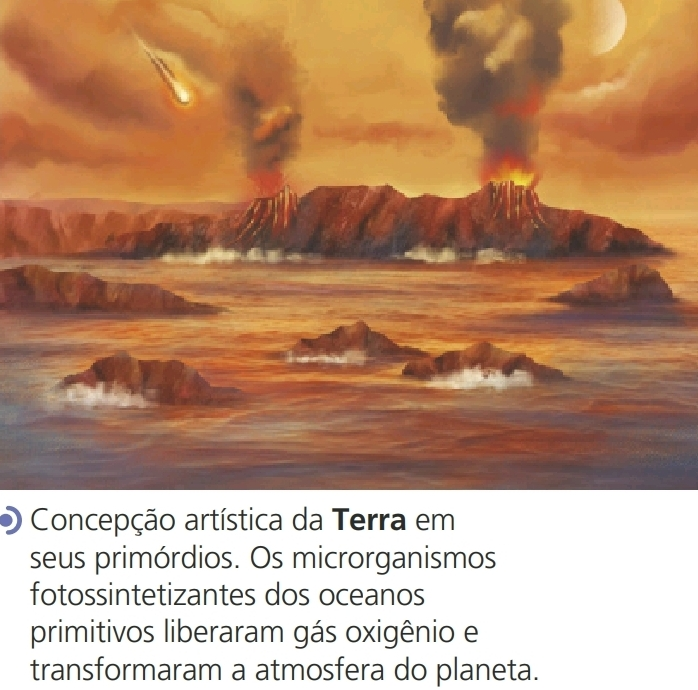
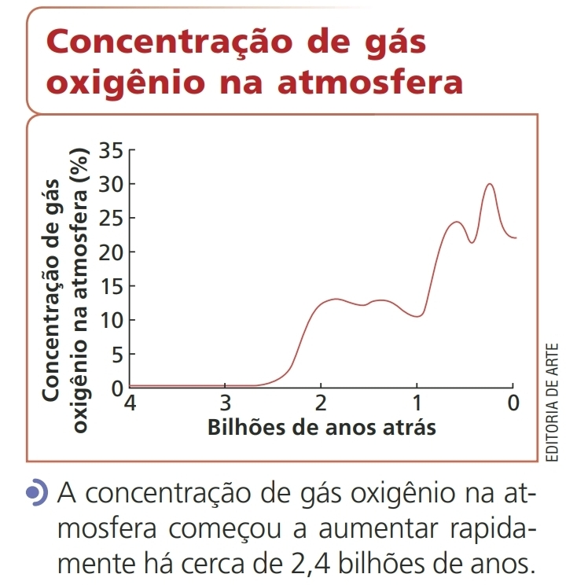
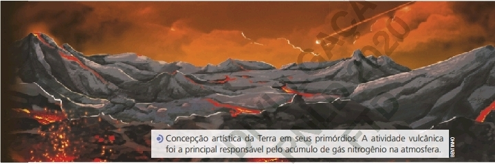
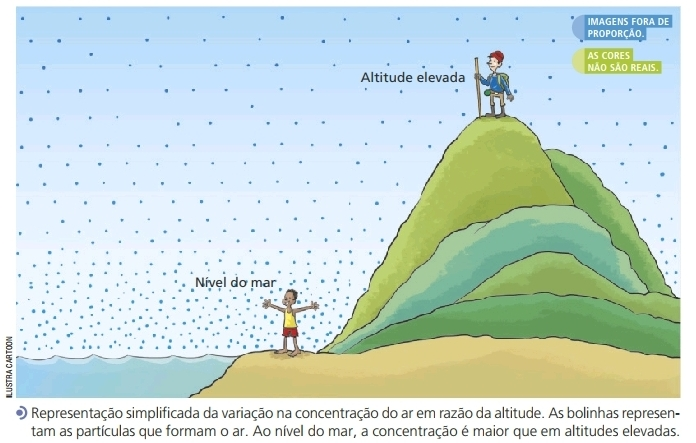
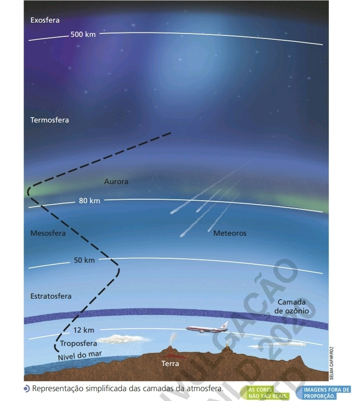
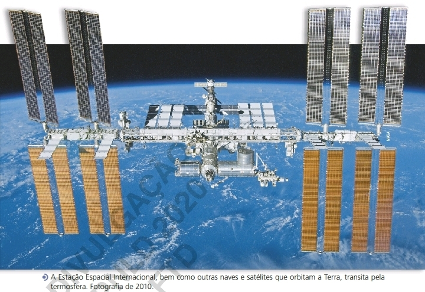
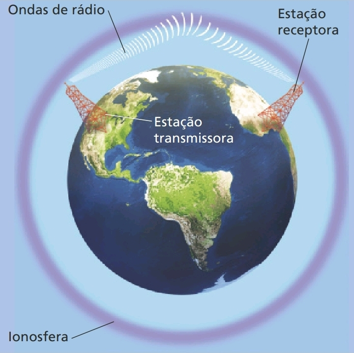
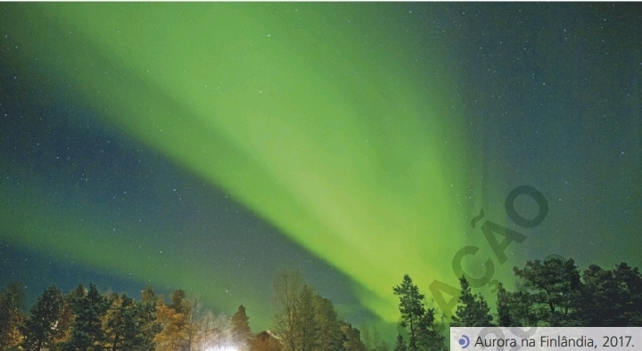

Atmosfera é a camada de gases que envolve um corpo celeste, como um planeta ou um satélite natural, separando-o do espaço sideral. Todos os planetas do Sistema Solar possuem atmosfera, e muitos dos satélites naturais também. Contudo, a composição da atmosfera varia muito de um astro para outro.
Vimos que, na Terra, a atmosfera é composta basicamente dos gases nitrogênio e oxigênio. A atmosfera de Marte, porém, é composta quase que exclusivamente de gás carbônico. Urano, por sua vez, é cercado por uma camada dos gases hidrogênio e hélio. A Lua, satélite natural da Terra, não possui atmosfera: sua superfície é rodeada por vácuo. Por esse motivo, os astronautas que exploram a Lua utilizam trajes especiais completamente vedados e carregam consigo cilindros com gás oxigênio comprimido, para que possam respirar.
A composição da atmosfera é um fator determinante tanto para o clima quanto para o estabelecimento e a manutenção da vida. O gás oxigênio presente na atmosfera da Terra, por exemplo, é necessário para a maioria dos seres vivos atuais. Mas a atmosfera não teve sempre essa mesma composição; ao longo do tempo, ela mudou bastante.
A atividade vulcânica na Terra jovem era muito intensa. As erupções vulcânicas podem expelir diversos materiais, entre eles gás nitrogênio e gás carbônico. A maior parte do gás carbônico dissolveu-se nos oceanos primitivos, enquanto o gás nitrogênio permaneceu sobre a superfície. Com o passar do tempo, esse gás se acumulou e passou a compor a maior parte da atmosfera.

Nesse período, a superfície do planeta já apresentava uma temperatura amena o suficiente para dar suporte à vida. Os primeiros seres vivos surgiram nos oceanos e, ao longo do tempo, passaram a se diversificar. Pesquisas indicam que, alguns milhões de anos após o primeiro ser vivo ter aparecido, microrganismos fotossintetizantes surgiram e se proliferaram nos mares. Ao realizar fotossíntese, esses organismos consomem gás carbônico e liberam gás oxigênio no ambiente. Com isso, a quantidade de gás oxigênio disponível no ambiente foi aumentando gradativamente.

Ao longo do tempo, o gás oxigênio passou a se acumular na atmosfera e favoreceu a sobrevivência de organismos que realizavam respiração. Ao mesmo tempo, esse acúmulo levou à extinção a maior parte das espécies existentes à época, para as quais esse gás era tóxico. Essa mudança na atmosfera foi crucial para o surgimento e a diversificação de vários grupos de seres vivos que dependem do gás oxigênio, como os animais.

A concentração do ar atmosférico vai diminuindo conforme a altitude aumenta. No topo de grandes montanhas, por exemplo, o ar é menos concentrado do que ao nível do mar. Esse ar rarefeito tem baixa concentração de gás oxigênio, bem como dos outros gases que constituem a atmosfera. Isso dificulta a respiração de montanhistas que se aventuram a conquistar o cume dessas montanhas e torna o ambiente inóspito para boa parte dos seres vivos.

Conforme a altitude aumenta, não é apenas a concentração do ar que se altera. A temperatura, assim como outros fatores, varia muito à medida que nos afastamos da superfície. Com base nisso, a atmosfera é dividida em camadas, que não têm limites muito exatos entre si. Essas camadas são: troposfera, estratosfera, mesosfera, termosfera e exosfera.
A troposfera é a camada que se inicia logo acima da superfície e se estende até, aproximadamente, 12 quilômetros de altitude. Por ser a camada mais próxima à superfície, é também a que concentra a maior quantidade de ar, correspondendo a cerca de 75% de todo o ar atmosférico.
A maioria dos seres vivos terrestres, inclusive o ser humano, vive imersa na troposfera. É nessa camada que ocorrem os principais fenômenos climáticos que nos afetam, como ventos, nuvens e chuvas. A temperatura na troposfera diminui com a altitude: próximo à superfície as temperaturas são mais elevadas que nas grandes altitudes. No limite superior dessa camada, a temperatura média é de 56 graus Celsius negativos (–56 °C).
A estratosfera inicia-se logo acima da troposfera e segue até cerca de 50 quilômetros de altitude. A concentração de oxigênio nessa camada é baixíssima, insuficiente para que uma pessoa possa respirar. Ao contrário do que ocorre na troposfera, a temperatura na estratosfera aumenta conforme se ganha altitude, chegando até cerca de –2 °C em seu limite superior. Em uma faixa da estratosfera, a cerca de 24 quilômetros de altitude, está localizada a camada de ozônio, que será analisada adiante.

Acima da estratosfera está a mesosfera, que vai até cerca de 80 quilômetros de altitude. Nessa camada as temperaturas caem rapidamente, chegando próximo de –100 °C no limite superior. É na mesosfera que se formam fenômenos luminosos conhecidos como meteoros, causados pela passagem de meteoroides através da atmosfera. Esses corpos celestes viajam a altíssimas velocidades e, ao entrarem na mesosfera, o atrito com o ar rarefeito faz que se tornem incandescentes. Os meteoros são conhecidos também como estrelas cadentes, embora não sejam estrelas.
A camada seguinte é a termosfera, que se estende até aproximadamente 500 quilô- metros de altitude. É muito difícil definir seu limite com precisão, já que o ar é extremamente rarefeito. Nessa camada, a temperatura aumenta conforme nos afastamos da superfície e pode passar de 1 000 °C.
Entre a mesosfera e a termosfera existe uma região com características particulares denominada ionosfera, que concentra uma grande quantidade de partículas eletricamente carregadas, os íons.

Uma das propriedades da ionosfera é a de refletir ondas de rádio. Essa característica é empregada para a transmissão de informações via rádio: as ondas emitidas por uma antena refletem na ionosfera e são captadas por outra antena. Se não houvesse a ionosfera, boa parte das ondas de rádio seguiria para o espaço, e não seria possível fazer transmissões de longa distância sem o uso de satélites.

É na ionosfera que acontecem os fenômenos conhecidos como auroras. Quando certas partículas provenientes do Sol colidem com as partículas eletricamente carregadas da ionosfera, ocorre a emissão de luz. As auroras ocorrem próximo aos polos do planeta e podem ser boreais (próximas ao Polo Norte) ou austrais (próximas ao Polo Sul).

A exosfera é a camada mais externa da atmosfera. Ela envolve a termosfera e se estende por centenas de quilômetros, sem um limite definido. Nela, a temperatura volta a diminuir gradualmente. O ar é extremamente rarefeito, composto basicamente dos gases hidrogênio e hélio. A exosfera é considerada o limite entre a atmosfera e o espaço sideral, onde não há ar.